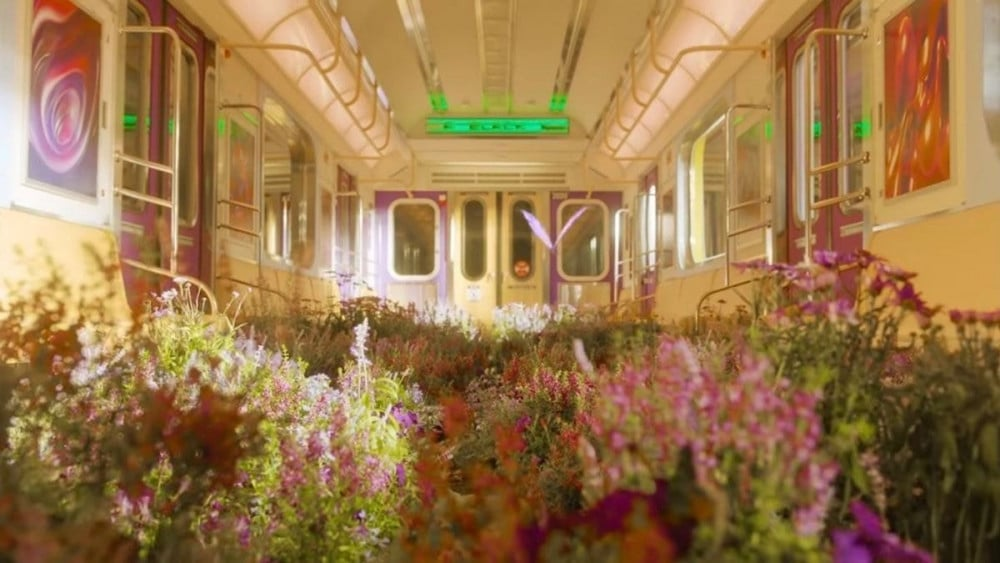

BLOG

🬠¡K-Pop Explosion! Edita Videos Como Un Pro De Seúl
¿Quieres que tus videos brillen como las estrellas del K-Pop? 🌟 Descubre los secretos de edición que hacen que BTS y BLACKPINK se vean increÃbles en cada toma. Desde transiciones suaves hasta efectos deslumbrantes, te enseñaremos a crear magia visual que hará que tus seguidores griten de emoción. 🎵💃

🖼️ Domina El Arte Urbano: Diseña Posters Que Griten En Las Calles 🏙️
¿Listo para conquistar la jungla de concreto? 🦠Aprende a crear posters urbanos que capturen miradas y detengan el tráfico. Te revelaremos las técnicas de los artistas callejeros más audaces para que tus diseños se apoderen de la ciudad. ¡Prepárate para ver tu arte en cada esquina!